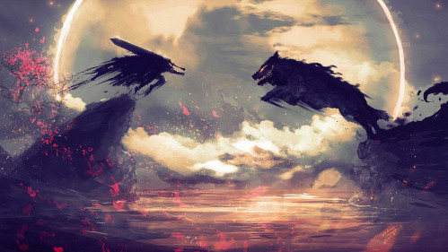

Berserk
Berserk (ベルセルク) es un manga creado por Kentaro Miura y posteriormente adaptado en anime, con un estilo épico fantástico y de fantasía oscura. Miura publicó un prototipo de Berserk en 1988. El manga comenzó a publicarse al año siguiente en la extinta revista mensual Animal House, hasta que fue reemplazada en 1992 por la revista quincenal Young Animal, donde fue publicado irregularmente hasta el 2021 tras la muerte de su autor